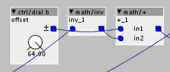

Hey @Sputnki
I am wondering if you would mind giving another advice on the object?
I am still working on the object and got most of it woriking now. Next thing is to add an invert function. I am having a bit of problems with that. I can patch it with factory objects, buthaving a few issues with coding it. I need to explain a little bit first:
Basicly the object has got 3 functions:
0 = Clean mode:
The input it not converted.
Unipolar input = unipolar output.
Bipolar input = Bipolar output.
Amount knob sets how much of the signal is let through.
1 = Unipolar to bipolar mode:
The input will be converted from unipolar to bipolar.
Amount knob sets how much of the signal is let through.
2 = Bipolar to unipolar mode:
The input will be converted from bipolar to unipolar.
Amount knob sets how much of the signal is let through
And now I'd like to add an invert function for all 3. The first one "clean" I got working. The second, unipolar to bipolar, I can patch with factory objects like this:

.... Basicly just a 64+ offset, added to the inverted signal. But when I do this in the object, it doesnt give the same result. I know it is wrong, the way I do it, but I just dont understand how to get it right. I added the +64 to TRY to do the same as the picture above
outlet_o= __SMMUL(-inleti+64<<1,param_Am<<4);
But it outputs a pretty random number. I cant really figure out how much it is offset wrongly. Usually you can see it pretty easily, but I cant figure this out.
First I need to get this right and then go on to the final one bipolar to unipolar.
Any suggestion on how I can get it right appreciated 
Thanks

{kind=link}